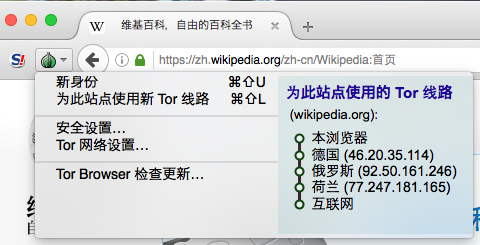
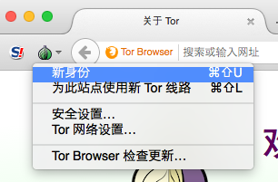

管理身份
当您连上某个网站时，不只是该网站的管理员可获取有关于您的相关信息，现今许多网站都会使用像是脸书的“赞”功能按钮、访客追踪分析、广告推播服务等各种第三方网络服务，此类的功能可以将您在不同网站上的活动纪录串连组合起来。
使用洋葱路由网络可以防止网络监听者找出您的真实网络地址以及实际地理位置，但是他们仍然能够将您在网络上活动的各种纪录连接组合在一起，并还原出您的网络活动全貌。有鉴于此，Tor 浏览器有加入一些特殊设计，可以帮助您管控可能被用于身份识别的相关信息。
网址栏
Tor 浏览器会以您在网址列中的网站名称为中心，来维护您与网站间的交互关系，因此，即使您连上了两个不同的网站，但两个站台上都有使用相同的第三方网络追踪服务，Tor 浏览器仍会强制让您与这两个网站间的连接，透过两条不同的洋葱路由回路来交换数据，如此可以让第三方网络追踪服务非常难以察觉这两条通往不同网站的连接，其实都是源自于您的浏览器。
从另一方面而言，所有通往同一网站的连接都将会透过同一条洋葱路由回路来达成，因此即使您在浏览器中打开多个不同的页签来阅览同一网站中的不同网页，其网站的功能也不会受到影响。

您可以在洋葱菜单的当前选项卡中看到 Tor 浏览器目前使用的线路图。
在 Tor 上登录
尽管 Tor 浏览器在设计上是使用户在网络上全面匿名，但也有一些情况需要使用 Tor 并配合用户名、密码或其他识别信息来登录网站。
如果您使用常规浏览器登录网站，在此过程中会暴露您的 IP 地址和地理位置。发送电子邮件也是如此。使用 Tor 浏览器登录您的社交网络或电子邮件账户时，您可以精细的选择提供给网站的信息。如果您尝试访问的网站在您的网络上被审查，使用 Tor 浏览器登录也很有用。
当您通过 Tor 登录一个网站时，有几点应该牢记：
参见 安全连接 页面了解如何在安全登录时确保连接安全的重要信息。
Tor 浏览器会让您的网络活动看起来像是来自于世界各个不同地区的网络连接，有时候某些像是银行或电子邮件服务的网站会认为您的帐号被他人盗用了，因此自动将您的帐号锁定，要解决此情况的唯一方式是利用网站服务提供的帐号恢复功能，或直接向该网站服务的提供业者说明您的情况。
变更身份和线路

在 Torbutton 菜单中有“新身份”和“为此站点使用新 Tor 线路”这两个 Tor 浏览器功能选项。
- 更换身份
若您想要避免后续在网络上活动的相关记录，与您之前网络活动之记录被链接组合在一起，此选项即可帮助您达成此目的。运行此功能将会关闭所有已经打开的浏览器窗口及标签页，清除所有的浏览器 Cookie 与历史记录等个人信息，并且为后续所有的网络连接创建新的洋葱路由回路。Tor 浏览器将会警告您说所有正在进行中的活动与下载将会被终止，因此在点击“新身份”选项前，请先做好相关的准备。
- 为此站点使用新 Tor 线路
当您目前的洋葱路由回路中所使用的出口节点无法正常连上您所欲访问的网站或加载其网页时，可以试着运行此功能，它会让当前窗口或页签创建另一条新的洋葱路由回路并重新连上该址定网站，若有其他窗口或页签也是连上该网站的话，在刷新时也会改用新的洋葱路由回路来连接，此功能不会清除任何个人相关信息或中断连上其他网站的活动。